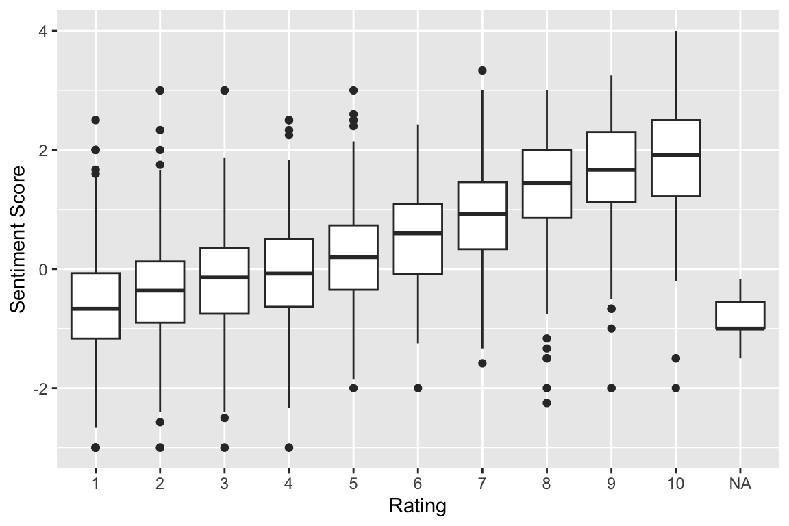
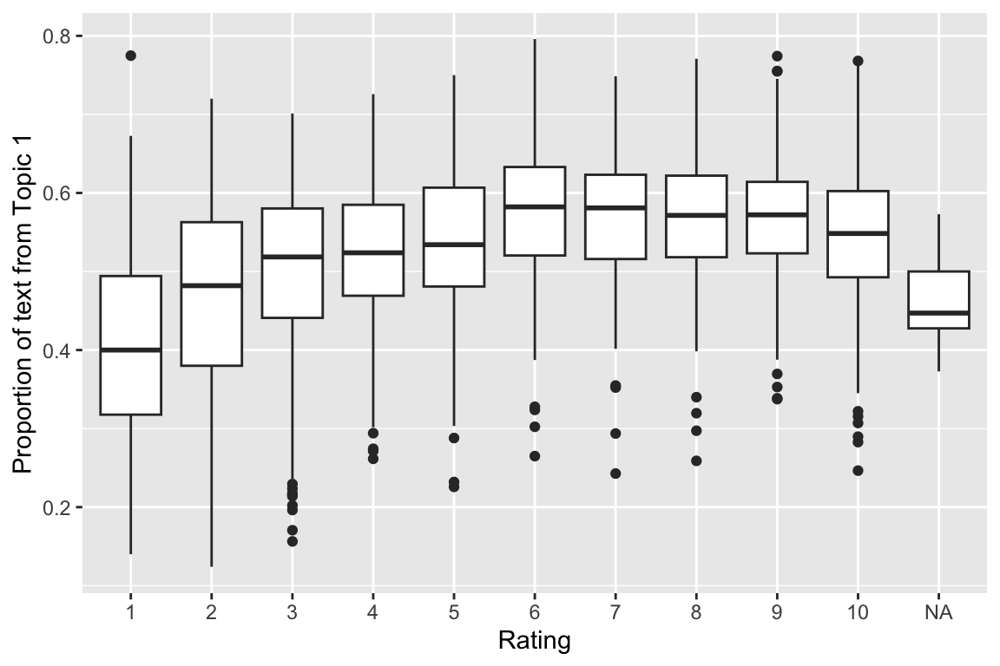
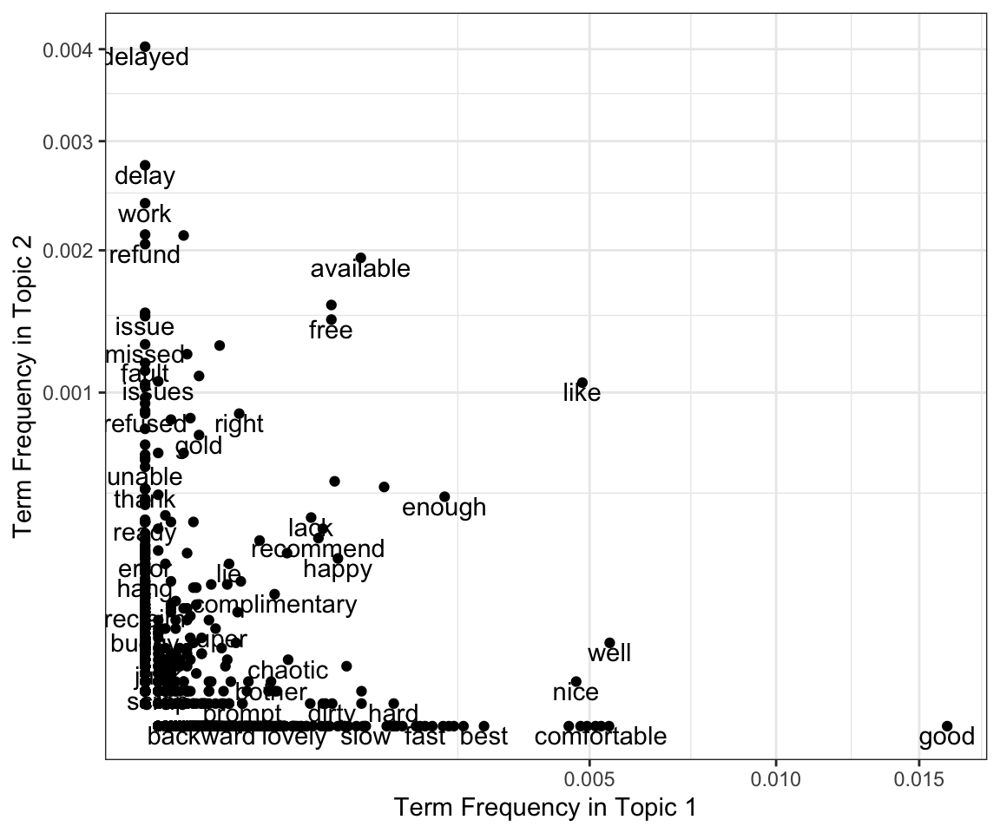

library( dplyr )
library( ggplot2 )
library( tidytext )
library( stringr )
library( tidyr )
library( topicmodels )MA22019 2025 - Solutions for Homework 6
Mise en place
Homework
Solutions
You may want to load the following packages before starting the exercise:
When working on a University PC, you have to first install the tidytext package and any dependencies using
install.packages( "tidytext", dependencies = TRUE )For the sentiment analysis you can load the sentiment lexicons using
AFINN <- read.csv("data/AFINN Sentiment Lexicon.csv")
Bing <- read.csv("data/Bing Sentiment Lexicon.csv")Homework Question - Sentiment Analysis vs Latent Dirichlet Allocation
So far we have used sentiment analysis to explore whether a statement has a positive or negative emotional intent. The purpose of this exercise is to apply sentiment analysis to another data set and to explore whether Latent Dirichlet Allocation (LDA) is able to identify differences in the language used for positive and negative reviews.
We will be working with customer reviews for British Airways. The reviews are stored in the file “British Airways Reviews.csv” and the following information is provided:
rating - Score given by the customer (1=“very poor”, 10=“very good”)
country - The country where the customer resides
review - Written comment provided by the customer
Perform the following tasks using the techniques introduced in Chapter 3 of the lecture notes:
Derive a sentiment score for each review based on the written comments. Explore how the score you obtain compares with the numerical rating given by the customer.
Estimate a LDA model with \(K=2\) topics. Explore the relation between the proportions \(\psi_{1,1},\ldots,\psi_{N,1}\) and the numerical score given by the customer. In your analysis you should carefully consider which words to include in the analysis.
Based on your results in parts a) and b), discuss the performance of sentiment analysis and LDA in terms of identifying whether a review by a British Airways customer is more positive or more negative.
We start by loading the data and by creating an index for each review:
BA <- read.csv( "data/British Airways Reviews.csv" )
BA <- BA %>% mutate( Index=1:nrow(BA) ) To perform sentiment analysis, we will consider the AFINN sentiment lexicon:
AFINN <- read.csv("data/AFINN Sentiment Lexicon.csv")The first step is to split the reviews into individual words and assign each word its sentiment score:
BA_sentiment <- BA %>%
unnest_tokens( word, review ) %>%
inner_join( AFINN, by="word" )For each review we calculate its average sentiment and use box plots to visualise the distribution of the calculated sentiment score for the different ratings:
BA_sentiment %>%
group_by( factor(Index) ) %>%
summarise( rating = rating[1], sentiment = mean( value ) ) %>%
ggplot( aes( x=factor(rating), y=sentiment ) ) +
geom_boxplot( ) +
labs( x="Rating", y="Sentiment Score" )
We find that the calculated sentiment score increases with the rating, with reviews which received no rating recording the lowest median sentiment score. As such, the median sentiment score increases with the positivity of the review / customer satisfaction.
Let’s move on the second part. The first task is to decide which words should be considered when estimating topics. While we should remove stop words when performing LDA, in this particular case we may want to keep the ones that represent emotional intent. One option is thus to define a new stop list which contains all the words from our standard stop list excluding the ones in the Bing sentiment lexicon (we use it because it includes more words than AFINN)
Bing <- read.csv("data/Bing Sentiment Lexicon.csv")
stop_words_sentiment <- stop_words %>% anti_join( Bing, by="word") We are now ready to perform the steps required to perform LDA, beginning with deriving the document-term matrix:
BA_count <- BA %>%
unnest_tokens( word, review ) %>%
anti_join( stop_words_sentiment, by="word" ) %>%
count( Index, word, sort = TRUE )
BA_dtm <- BA_count %>% cast_dtm( Index, word, n )We can now fit the LDA model with \(K=2\) topics:
BA_LDA <- LDA( BA_dtm, k = 2, method = "Gibbs", control = list(seed=1234) )Interest lies in the proportions \(\psi_{1,1},\ldots,\psi_{N,1}\) which we can extract using
BA_topics <- tidy( BA_LDA , matrix = "gamma" ) Finally, we visualize the relation between the proportions and the ratings using a box plot:
BA_topics %>%
filter( topic == 1 ) %>%
mutate( document = as.numeric(document) ) %>%
full_join( BA, by = c("document"="Index") ) %>%
ggplot( aes( x=factor(rating), y=gamma ) ) +
geom_boxplot() + labs( x="Rating", y="Proportion of text from Topic 1" )
We find that reviews with a rating of 1 or 2 tend to feature less of Topic 1 than Topic 2, while the opposite applies for reviews receiving a rating of 3 or higher. The differences are small though and we see quite a variety in the proportions for all ratings, with proportions for each rating ranging between about 2-% and 80%.
When we compare the results for the sentiment analysis and LDA, we find that sentiment analysis performs best at identifying whether a review is positive or not. However, the performance is not stellar as even very positive reviews may be assigned a negative sentiment score. Consequently, the text data analysis tool box we introduced in this course can only capture the emotional intent of a customer review to a certain extent.
The weak performance of LDA is not very surprising, as there is no guarantee that the two estimated topics will be defined by whether the review uses a positive or negative wording. Reviews may use quite a few unique words, such as locations names. Let’s have a look at the frequencies of the words in the Bing sentiment lexicon for the different topics:
tidy( BA_LDA , matrix = "beta" ) %>%
inner_join( Bing, by=c("term"="word") ) %>%
mutate( topic = case_when( topic==1 ~ "Topic1", topic==2 ~ "Topic2") ) %>%
pivot_wider( names_from = topic, values_from = beta, values_fill = 0 ) %>%
ggplot( aes(x=Topic1, y=Topic2) ) + geom_point() +
geom_text( aes(label=term), check_overlap = TRUE, vjust=1 ) +
coord_trans( x="sqrt", y="sqrt" ) + theme_bw() +
labs( x="Term Frequency in Topic 1", y="Term Frequency in Topic 2" )Warning in inner_join(., Bing, by = c(term = "word")): Detected an unexpected many-to-many relationship between `x` and `y`.
ℹ Row 24613 of `x` matches multiple rows in `y`.
ℹ Row 2698 of `y` matches multiple rows in `x`.
ℹ If a many-to-many relationship is expected, set `relationship =
"many-to-many"` to silence this warning.Warning: `coord_trans()` was deprecated in ggplot2 4.0.0.
ℹ Please use `coord_transform()` instead.
We see that LDA did actually quite a good job: words we would assign with a positive sentiment are mainly in Topic 1, while words with a negative sentiment can mostly be found in Topic 2. As such, the fact that most of the estimated proportions being in the 40-60% range is down to the two topics having quite a lof of common words.